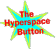
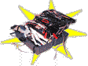

It's easy to lose your bearings in
the topsy-turvy
world of the Web. But these tools will keep you on track.
Subject-oriented directories
are browsable indexes of
Web sites.
Yahoo
The WWW Virtual Library
Galaxy
Search engines
are databases of Web pages that
can be searched with a keyword.
Webcrawler
Lycos
InfoSeek
WWW Worm
NIKOS
JumpStation
-

Filters
give you the rundown
of what's new and noteworthy.
HotWired's Net Surf
Netsurfer Digest
Netscape's What's Cool?
What's New with NCSA Mosaic
Cool Site of the Day
Links from the Underground
The Web's Edge
Gopher Jewels
